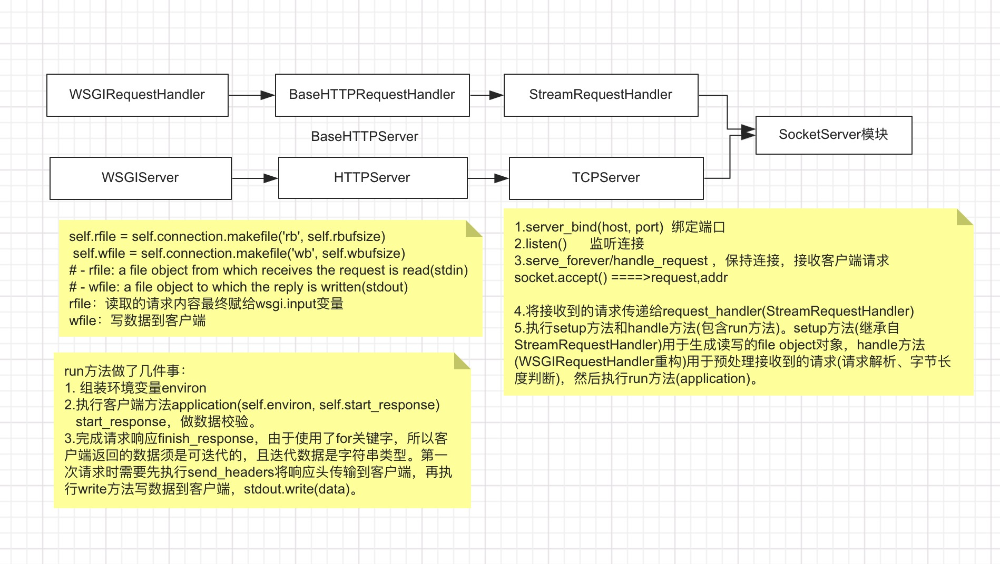

WSGI源码分析
1.引入¶
Werkzeug是WSGI协议的一个工具包，封装了服务请求响应相关的实现。
2. WSGI¶
WSGI(web service gateway interface)定义了Web服务器与Web应用之间交流的标准接口或规范。 它规定了Web程序必须有一个可调用的对象(可以是一个函数，可以是一个类)，且该可调用对象接收两个参数，返回一个可迭代的对象。
- environ : 是一个字典，包含请求相关的所有信息。
- start_response : 是一个函数，用于发起响应，包含状态码，响应参数等。
2.1 基于WSGI协议实现的服务器和客户端¶
- 客户端
- 服务端
2.1.1 解析¶
make_server 函数的描述
def make_server(
host, port, app, server_class=WSGIServer, handler_class=WSGIRequestHandler
):
"""Create a new WSGI server listening on `host` and `port` for `app`"""
server = server_class((host, port), handler_class)
server.set_app(app) #设置可调用应用
return server
该函数接在接收到host和port后，为该应用程序指定了WSGI服务器，用于接收请求，同时指定了处理该请求的类WSGIRequestHandler。 
{kind=link}
3.Werkzeug¶
- 中间件(middleware)
- 请求响应封装(wrappers)
- 本地上下文(local)
- 路由(routing)
3.1 middleware¶
- dispatcher 程序调度中间件
#客户端
from werkzeug.middleware.dispatcher import DispatcherMiddleware
def app1(env, start_response):
start_response('200 OK', [('Content-Type', 'application/json')])
return str(env['wsgi.run_once'])
def app2(env, start_response):
start_response('200 OK', [('Content-Type', 'application/json')])
return str(env['wsgi.input'])
app = DispatcherMiddleware(app1, {'/12': app2})
'''
实现了call方法，接收env和start_response参数
'''
# 服务端
from werkzeug.serving import run_simple
from client import app
run_simple('localhost', 9090, app, use_reloader=True)
对于不同的请求分配到不同的WSGI应用进行处理，默认请求的应用是app1，若请求以
/12结尾，则会请求app2应用。 run_simple 内部调用两个方法(make_server和serve_forever)，使用的默认接收请求和处理请求的类是BaseWSGIServer、WSGIRequestHandler
- http_proxy 代理中间件 （用于请求外部服务器）
ProxyMiddleware的call方法
from werkzeug.middleware.http_proxy import ProxyMiddleware def app1(env, start_response): start_response('200 OK', [('Content-Type', 'application/json')]) return str(env['wsgi.run_once']) app = ProxyMiddleware(app1, {'/12/': { 'target':"http://localhost:9000", }})def __call__(self, environ, start_response): path = environ["PATH_INFO"] app = self.app for prefix, opts in self.targets.items(): if path.startswith(prefix): app = self.proxy_to(opts, path, prefix) break return app(environ, start_response) #proxy_to proxy_to 构建外部服务器的请求 if target.scheme == "http": con = client.HTTPConnection( target.ascii_host, target.port or 80, timeout=self.timeout ) elif target.scheme == "https": con = client.HTTPSConnection( target.ascii_host, target.port or 443, timeout=self.timeout, context=opts["ssl_context"], ) else: raise RuntimeError( "Target scheme must be 'http' or 'https', got '{}'.".format( target.scheme ) ) con.connect() - shared_data 静态资源访问中间件
SharedDataMiddleware的call方法主要代码为:wrap_file(environ, f) f为文件句柄，其实际执行了一个
from werkzeug.middleware.shared_data import SharedDataMiddleware import os def app1(env, start_response): start_response('200 OK', [('Content-Type', 'application/json')]) return str(env['wsgi.run_once']) app = SharedDataMiddleware(app1, {'/static':os.path.join(os.path.dirname(__file__),'1.jpg')}) #若在服务端条件了参数static_files，则客户端可以不使用SharedDataMiddleware中间件 if static_files: from .middleware.shared_data import SharedDataMiddleware application = SharedDataMiddleware(application, static_files)FileWrapper文件装饰器，其内部实现了迭代器的协议方法
3.2 wrappers¶
from werkzeug.wrappers import Request,Response
#方式1
def app(env, start_response):
request = Request(env)
resp = Response('hello werkzeug from ' + str(request.environ))
return resp(env, start_response)
#方式2
@Request.application
def app1(request):
return Response('hello werkzeug from '+ str(request.environ['HTTP_USER_AGENT']))
对于方式1，Request类对env进行包装，将env赋值给其属性变量
environ,返回的resp是一个满足wsgi协议的应用。
def __call__(self, environ, start_response):
"""Process this response as WSGI application.
:param environ: the WSGI environment.
:param start_response: the response callable provided by the WSGI
server.
:return: an application iterator
"""
app_iter, status, headers = self.get_wsgi_response(environ)
start_response(status, headers)
return app_iter
对于方式2,使用到了装饰器，其中
Request类的application是一个类方法classmethod,其内部函数为:
'''
f即为被装饰的函数```app1```, 位置参数args为支持wsgi协议的默认应用入口的参数(environ,start_response)。
'''
@classmethod
def application(cls, f):
def application(*args):
request = cls(args[-2]) #等价于Request(environ)
with request:
try:
#移除原协议参数，同时将request作为请求参数，即为原app1(request)
resp = f(*args[:-2] + (request,))
except HTTPException as e:
resp = e.get_response(args[-2])
return resp(*args[-2:]) #即resp(environ,start_response)
return update_wrapper(application, f)
#update_wrapper 用于保留装饰后原函数的属性,即对(__dict__,__name__等)进行拷贝
方式2其实是执行方式1，是等价的。
request=Request(environ)包含一些接收数据的方法
1. request.args 接收get请求的参数,其类型为ImmutableMultiDict,不可变的多值字典对象，继承标准字典的所有方法。
第一种情况：当请求参数为一个键对应的多个值时，若使用json的序列化dumps方法，则只会取到第一组数据。此时应使用ImmutableMultiDict的lists()方法拿到数据([('name', [u'123', u'222'])]) 第二种情况：键值对一一对应，即可以通过list()方法取数据，也可以通过序列化dumps方法取数据。
2. request.get_data()用于接收post请求的参数，类型为字典序列化后的字符串。如使用request.data接收请求参数，则请求时需要指定contentType(非application/x-www-form-urlencoded)，否则接收到的数据为空。
3.3 local¶
本地上下文主要使用到了协程
greenlet, local其实质是在全局环境下，保证数据的隔离性，不同协程间的数据互不干扰。
from werkzeug.local import Local
from greenlet import getcurrent as get_ident , greenlet
l = Local()
def t1():
l.a = 12
l.A = 34
print('协程t1:%s'% l.__ident_func__(), l.a)
gr2.switch()
l.la = 'greenlet'
def t2():
l.b = 21
l.B = 43
print('协程t2:%s'% l.__ident_func__(), l.b)
gr1.switch()
if __name__ == "__main__":
l.m = 8
l.M = 9
print('默认协程:%s'%l.__ident_func__(), l.m)
gr1 = greenlet(t1)
gr2 = greenlet(t2)
gr1.switch()
print('协程开辟独立空间存储的数据：')
for k, v in l:
print('%s==%s'%(k, v))
默认协程:<greenlet.greenlet object at 0x10f4b9c00> 8
协程t1:<greenlet.greenlet object at 0x10f4b9e10> 12
协程t2:<greenlet.greenlet object at 0x10f4b9ec0> 21
协程开辟独立空间存储的数据：
<greenlet.greenlet object at 0x10f4b9c00>=={'m': 8, 'M': 9}
<greenlet.greenlet object at 0x10f4b9e10>=={'a': 12, 'A': 34, 'la': 'greenlet'}
<greenlet.greenlet object at 0x10f4b9ec0>=={'b': 21, 'B': 43}
local内部实现了( Local, LocalStack )来实现数据的隔离，本质上是字典，只是字典的键为协程的id。
try:
from greenlet import getcurrent as get_ident
except ImportError:
try:
from thread import get_ident
except ImportError:
from _thread import get_ident
class Local(object):
__slots__ = ("__storage__", "__ident_func__")
def __init__(self):
object.__setattr__(self, "__storage__", {})
object.__setattr__(self, "__ident_func__", get_ident)
def __release_local__(self): #协程执行完释放数据存储空间
self.__storage__.pop(self.__ident_func__(), None)
LocalManager是对local对象进行管理，其主要的功能就是存储请求数据，及完成请求后，对存储空间进行资源释放。
from werkzeug.local import Local, LocalManager
from werkzeug.wrappers import Request, Response
local = Local()
local_manager = LocalManager(local)
def app(env, start_response):
local.request = request = Request(env)
resp = Response('hello werkzeug from ' + str(request.environ))
for k, v in local:
print(k, v)
return resp(env, start_response)
app = local_manager.middleware(app)
app进行重新赋值，目的是保证请求完成后，及时清除存储于local中的数据。其本质是执行
ClosingIterator(app(environ, start_response), self.cleanup), 其内部实现了迭代器协议和close方法该方法用于执行self.cleanup,即对请求存储在local中的数据进行清除。
3.4 routing¶
提供了变量转换器(Converter)、路由匹配规则(Rule)、存储路由规则(Map)、Map适配器(MapAdapter), 目的是通过不同的path_info 路径匹配对应的规则或函数
from werkzeug.routing import Map, Rule
from werkzeug.wrappers import Request, Response
def get_message(request):
return Response('路由'+ str(request.environ))
def get_number(request):
return Response('123')
rule1 = Rule('/message', endpoint=get_message) #建立路径到视图的映射
rule2 = Rule('/number', endpoint=get_number)
url_map = Map([rule1, rule2]) #存储路由映射
def app(env, start_response):
request = Request(env)
adapter = url_map.bind_to_environ(env) #1
endpoint, values = adapter.match() #2
resp = endpoint(request)
return resp(env, start_response)
1是完成请求环境的绑定，用于获取请求的方法、协议、请求参数等信息，并将获取的请求相关信息作为参数传递给MapAdapter。
2是完成请求参数和路由映射的匹配(本质上执行了rule的match方法)，并对请求方法进行检查
for rule in self.map._rules:
try:
rv = rule.match(path, method) #3
except RequestSlash :#内部请求错误
.......
if rv is None:
continue
if rule.methods is not None and method not in rule.methods:
have_match_for.update(rule.methods)
return rule.endpoint, rv
if have_match_for: #路由迭代完成后，如果存在have_match_for，会报MethodNotAllowed错误
raise MethodNotAllowed(valid_methods=list(have_match_for))
raise NotFound()
#rule.match核心代码
m = self._regex.search(path)
if m is not None:
groups = m.groupdict() # 动态路径字典
..........
创建日期: 2023-10-29 22:55:20